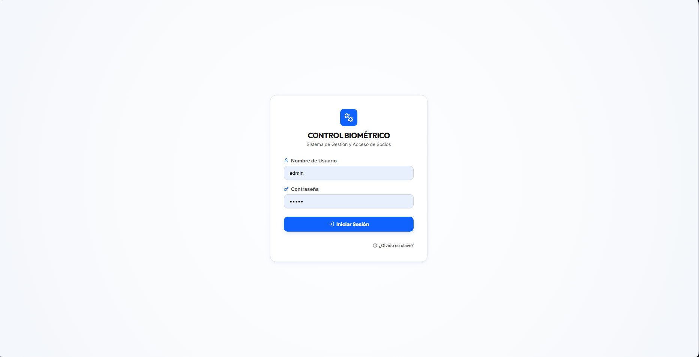
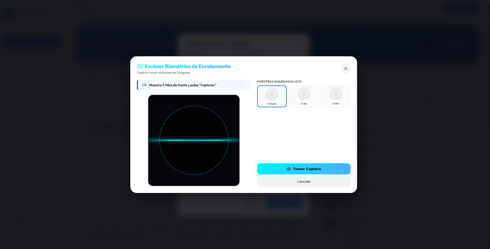
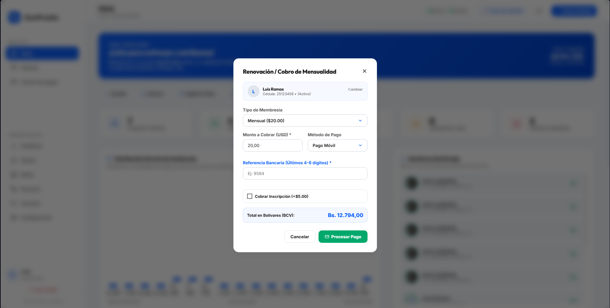
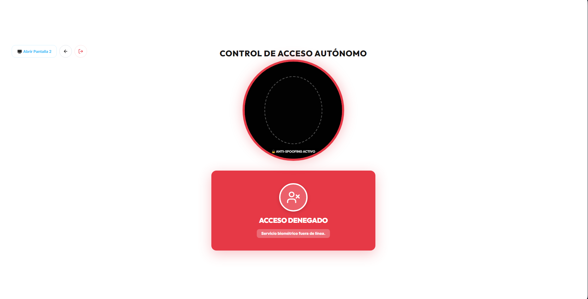
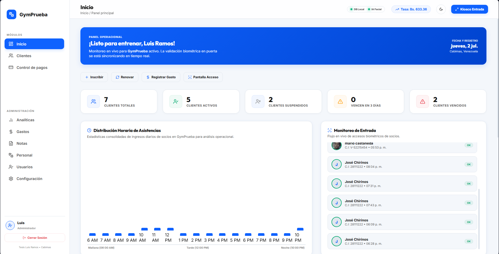
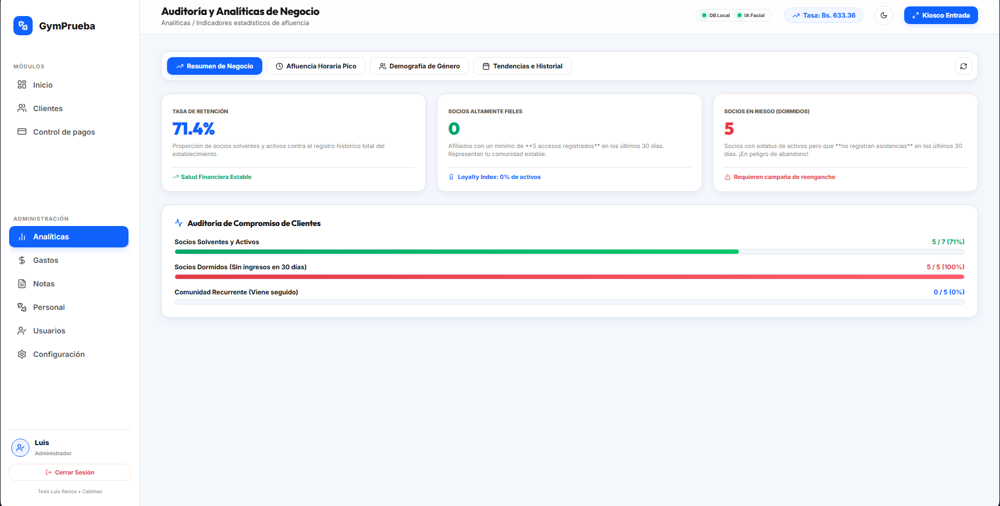
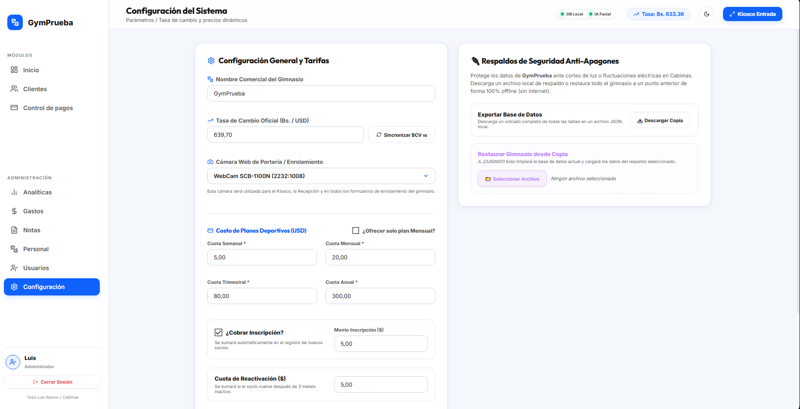

MANUAL DE USUARIO
Guía interactiva para la gestión de accesos y administración financiera
Trabajo de Grado • Ingeniería de Sistemas
Br. Luis Ramos • Cabimas, Venezuela
Control de Acceso y Roles (RBAC)
Compuerta de inicio de sesión segura con control estricto de roles administrativos (RBAC) y segmentación de datos por sucursales.
Administrador General
Acceso total. Posee un selector desbloqueado para auditar y alternar entre todas las sedes del municipio Cabimas.
Personal de Recepción
Acceso limitado. Vista bloqueada y restringida estrictamente a los cobros, socios y asistencias de la sucursal asignada.
Demostración Rápida 1-Clic
La pantalla de Login incluye botones de acceso directo para cargar las credenciales de demostración instantáneamente ante el jurado.

Registro y Enrolamiento Facial
Flujo secuencial para registrar los datos básicos de un socio y entrenar sus patrones biométricos en el motor de Inteligencia Artificial.
Registro Físico
Ingrese al menú "Socios", haga clic en "Nuevo Socio" y complete los datos (Cédula, Nombre, Teléfono, Correo).
Captura Biométrica Angular
Presione "Enrolar Rostro" para abrir la cámara web y capture tres poses: Frente, Perfil Izquierdo y Perfil Derecho.
Entrenamiento del Modelo LBPH
Presione "Confirmar y Entrenar". El motor actualizará localmente el archivo de pesos model.yml en 2-5 segundos.

Cobro de Membresías y Solvencias
El estado de solvencia es el factor lógico determinante en la puerta de entrada. Su registro se realiza de forma directa en el módulo financiero.
Pasarela Multidivisa (USD / Bs.)
Permite cobros en Bolívares o Dólares. Si se cancela en bolívares, el sistema realiza la conversión automática según la tasa configurada.
Actualización de Solvencia Inmediata
Al procesarse el pago, la membresía del socio se extiende por 30 días calendario y su estatus cambia instantáneamente a "Solvente" en la base de datos MySQL.
Métodos de Pago
Soporte para Pago Móvil, Efectivo Divisas, Efectivo Bolívares, Punto de Venta y Transferencia Bancaria.

Kiosko de Control de Acceso
Módulo automatizado a pantalla completa ubicado en el acceso físico del recinto. Valida la identidad y solvencia en milisegundos.
Acceso Autorizado (Verde Esmeralda)
Socio registrado y solvente. Emite un chime de dos tonos armónicos (C5 -> E5), registra el check-in en BD y permite la entrada.
Acceso Denegado (Rojo Carmesí)
Socio insolvente (membresía vencida) o rostro no registrado. Emite un zumbido grave de rechazo y bloquea el ingreso.
Simulador y Entrada Manual
En caso de fallas de luz o cámara, el recepcionista posee botones en el lateral para simular accesos o digitar la Cédula manualmente.

Dashboard Analítico de Negocios
El centro de mando para que los administradores analicen en tiempo real la afluencia, ingresos y estado de solvencia de las sedes.
Gráfico de Horas Pico
Representación interactiva construida en CSS que mide el volumen de check-ins por hora para identificar las horas pico de afluencia.
KPIs Financieros y Operativos
Tarjetas dinámicas que muestran la recaudación de caja del día, total de socios solventes e insolventes activos en tiempo real.
Feed de Transacciones Recientes
Panel con los últimos accesos autorizados de la sede con fotografía, nombre del socio y hora de check-in.

Analíticas y Estadísticas de Afluencia
Módulo de analítica avanzada para evaluar el flujo de asistencia histórica, permitiendo optimizar la distribución de recursos en los centros deportivos.
Análisis de Horas Pico
Interpretación del gráfico de tráfico para determinar los horarios con mayor concurrencia de socios. Permite planificar el personal necesario.
Ratios de Solvencia y Asistencia
Métricas consolidadas de la relación entre socios solventes y deudores insolventes, ayudando en la toma de decisiones administrativas.
Generación de Reportes
Consolidación de la data de asistencias, pagos y auditoría, con filtros cronológicos para la exportación de reportes de gestión.

Parámetros, Gastos y Nómina
Módulo administrativo centralizado para controlar los parámetros financieros del negocio, registrar gastos operativos y nómina del personal.
Tasa de Cambio y Membresía
Defina la tasa oficial del día de Bolívares por Dólar y configure el costo mensual estándar de la membresía en divisas.
Gestión de Personal y Nómina
Administración del staff e instructores del centro. Permite fijar salarios en dólares que se convierten a la tasa del día de forma transparente.
Balance Neto y Egresos
Registro de gastos del centro deportivo (electricidad, mantenimiento). El sistema resta los egresos de la recaudación para reportar la utilidad neta.
